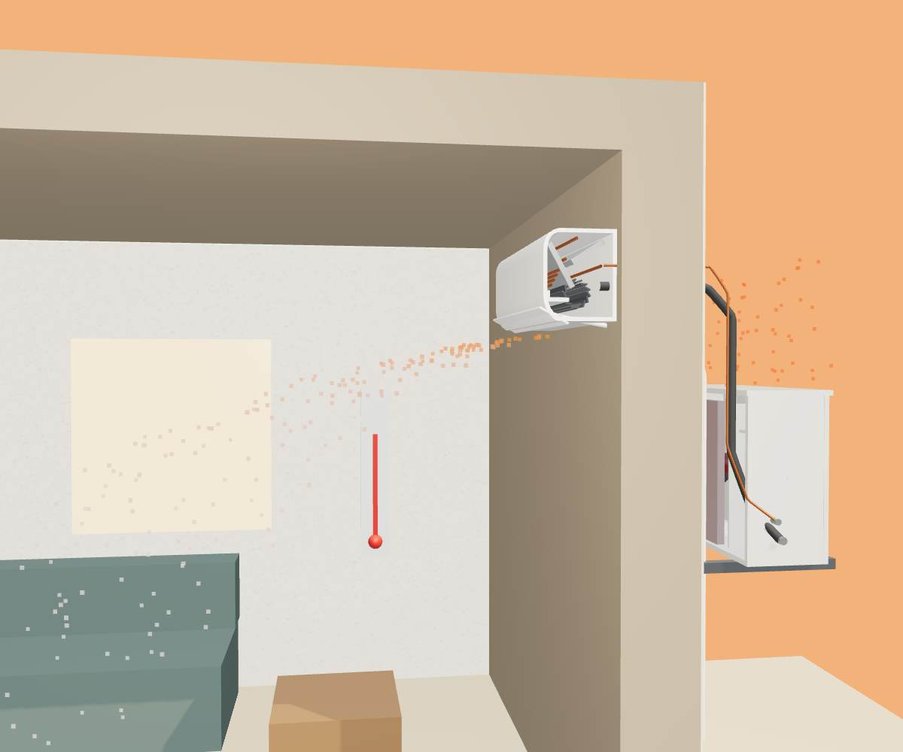
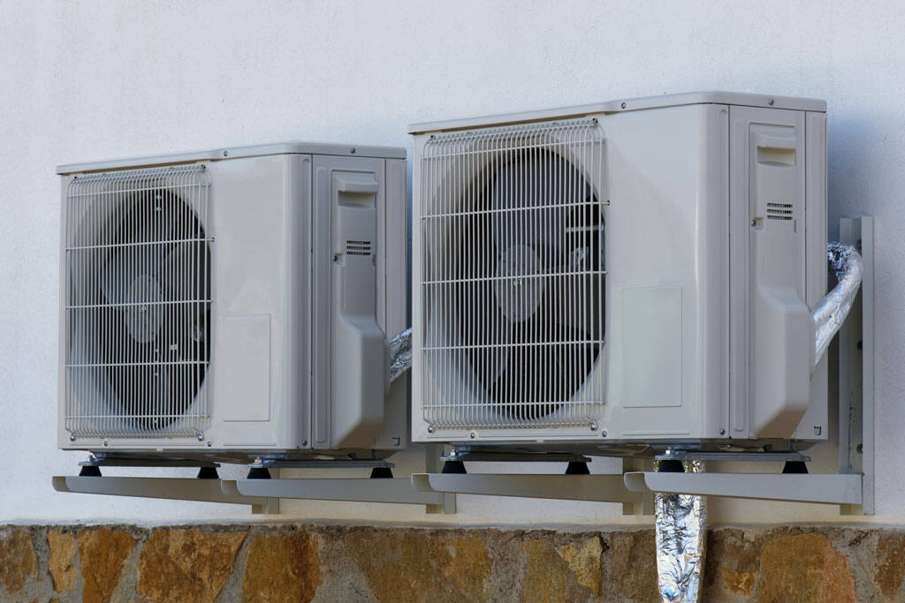
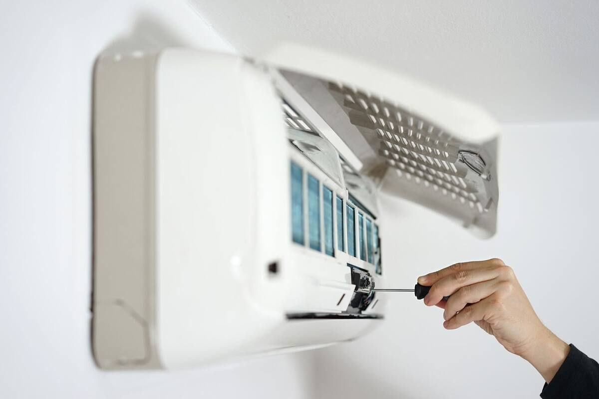
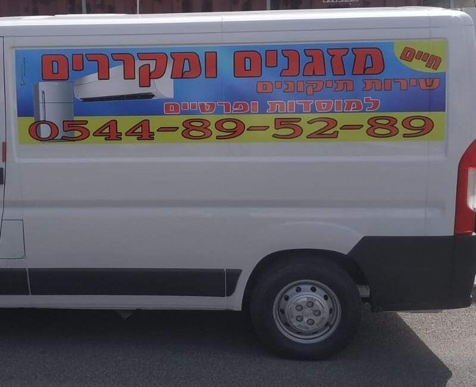

ערב חג, 15:00, והמזגן שותקHoliday eve, 3 pm, and the AC quits
לקוחה חזרה הביתה ביום לוהט, הדליקה את המזגן, והוא לא עבד. היא חיפשה בגוגל, וחיים היה הראשון שהיא התקשרה אליו. הוא אמר שהוא מגיע מיד, ומצא את התקלה מהר.A customer came home on a scorching day, switched on the AC, and nothing happened. She searched Google, and Haim was the first person she called. He said he was on his way, and found the fault quickly.
״חיים לא היסס ואמר שהוא מגיע במיידי לבדוק מה התקלה, חיים איתר את התקלה במהרה, ניכר כי הוא מקצוען ומאד אמין.״“Haim didn’t hesitate and said he was coming right away to check the fault. He found it quickly; you can tell he’s a professional and very reliable.”
כשמזגן מפסיק לקררWhen an AC stops cooling
המחשה של תקלה נפוצה ביחידה החיצונית, מהחום בסלון ועד שהמדחום יורד. גללו, או הקישו על הכפתורים בשלט.עברו בין השלבים בחצים, או הקישו על הכפתורים בשלט.An illustration of a common outdoor-unit fault, from the heat in the living room until the thermometer drops. Scroll, or tap the buttons on the remote.Step through with the arrows, or tap the buttons on the remote.

המחשה תלת-ממדית. כל מזגן וכל תקלה שונים.A 3D illustration. Every unit and every fault is different.
שלבStage 1/6
וגם כשהמקרר מפסיק לקררAnd when the fridge stops cooling
לקוח פנה לחיים עם תקלה במקרר, בימים של מטחי הטילים מאיראן, כשהרבה נותני שירות לא עבדו. חיים הגיע תוך זמן קצר, מצא את מקור התקלה, תיקן אותה, ובדק גם את שאר מערכות המקרר.A customer called Haim about a broken fridge during the days of the missile barrages from Iran, when many tradespeople weren’t working. Haim came within a short time, found the source of the fault, fixed it, and checked the rest of the fridge’s systems too.
״במיידי חיים מצא את מקור התקלה ותיקן אותה, בנוסף לבדיקה יסודית של שאר מערכות המקרר.״“Haim found the source of the fault immediately and fixed it, and also gave the rest of the fridge’s systems a thorough check.”
שני מזגנים, בלי לכלוךTwo units in, no mess left
בהתקנה עוברים דרך הקיר צנרת נחושת, כבל וצינור ניקוז, ותולים יחידה חיצונית על זוג זוויתנים. לקוח שחיים התקין אצלו שני מזגנים כתב שהדירה נשארה נקייה, וכל הפסולת פונתה.An installation runs copper lines, a cable and a drain hose through the wall, and hangs the outdoor unit on a pair of brackets. A customer who had two units installed by Haim wrote that the flat was left clean and all the waste taken away.


״הגיע להתקין בביתי שני מזגנים, וביצע התקנה מעולה. שמר על ניקיון הדירה ועל פינוי כל הפסולת. התקנה נקייה ומעולה!״“He came to install two air conditioners in my home and did an excellent installation. He kept the flat clean and took away all the waste. A clean, excellent installation!”

הרכב הלבן עם המספר על הדלתThe white van with the number on it
על הדלת כתוב ״שירות תיקונים למוסדות, מפעלים ופרטיים״. כשחיים בדרך אליכם, זה הרכב שתראו בחניה, עם אותו מספר שאתם מתקשרים אליו.The side reads “repair service for institutions, factories and private homes”. When Haim is on his way to you, this is the van you’ll see outside, with the same number you call.
״תוך זמן קצר הוא הגיע ופתר את התקלה במקצועיות, והכי חשוב, היה שקוף ואמין לאורך כל התיקון.״“He arrived within a short time and solved the fault professionally, and most importantly, he was transparent and reliable throughout the repair.”
״שרות מעולה, עמידה בזמנים… אמין ומקצועי, מומלץ.״“Excellent service, on time… reliable and professional, recommended.”
שלחו לחיים הודעהSend Haim a message
בחרו מה קרה ואיפה אתם. השלט כותב את ההודעה, והכפתור הגדול שולח אותה לחיים בוואטסאפ.Pick what happened and where you are. The remote writes the message, and the big button sends it to Haim on WhatsApp.
מתי ואיפהWhen and where
אזור שירות: חיפה והקריות. חיים מגיע אליכם הביתה.Service area: Haifa and the Krayot. Haim comes to your home.